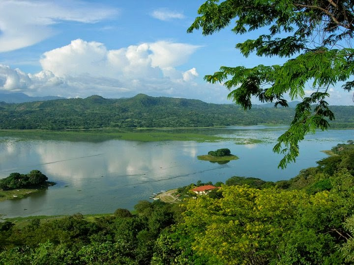

Departamento: CUSCATLAN
Cabecera: Cojutepeque
Municipios: 16
Extencion territorial: 756 km²
numero de habitantes: 232,238
Atracción turistica: Cascada Los Tercios
Su cabecera fue originalmente Suchitoto, pero a partir del 12 de noviembre de 1861 es la ciudad de Cojutepeque. Constó de los distritos o partidos de Cojutepeque y Suchitoto, creados respectivamente en 1786 y por Ley de 22 de mayo de 1835.
tiene una población estimada de 216.446 habitantes (2007).
Cuscatlán es un departamento que se ubica en la zona central de El Salvador. Este departamento posee los siguientes límites geográficos: al norte con el departamento de Chalatenango, al sur con La Paz y San Vicente, al este por los departamentos de Cabañas y San Vicente, y al oeste con San Salvador.
Su nombre proviene de una población pipil precolombina, etimológicamente significa “lugar de joyas y collares”, que proviene de las voces “coxcatl”, “cuzcatl” o “cuzcat” (joya preciosa, cuenta de escapulario, collar) y “tlan” o “tan” (preposición locativa). Cuscatlán fue fundado como departamento por decreto del Supremo Gobierno el 22 de mayo de 1835, y lo componían los distritos de Suchitoto, Cojutepeque, Ilobasco, Chalatenango, Tejutla y Opico, comprendiendo un total de 64 pueblos.
El decreto de 14 de febrero de 1855 dividió el departamento en dos: Chalatenango y el actual departamento de Cuscatlán. Finalmente, el 10 de febrero de 1873, se decretó la erección del departamento de Cabañas, a expensas del de Cuscatlán y de San Vicente.
La cabecera fue en un principio la ciudad de Suchitoto, pero el 12 de noviembre de 1861 se trasladó a Cojutepeque.
1. Cojutepeque (capital)
2. Candelaria
3. El Carmen
4. El Rosario
5. Monte San Juan
6. Oratorio de Concepción
7. San Bartolomé Perulapía

8. San Cristóbal
9. San José Guayabal
10. San Pedro Perulapán
11. San Rafael Cedros
12. San Ramón
13. Santa Cruz Analquito
14. Santa Cruz Michapa
15. Suchitoto
16. Tenancingo
Se encuentra situado en la región central del país y limita al N y NE con el departamento de Chalatenango, al E con Cabañas, al SE con San Vicente, al S con el Lago de Ilopango y el departamento de La Paz y, por último, al O con el departamento de San Salvador. En el N el valle del río Lempa origina una región plana y fértil, apropiada para la actividad agrícola. El centro y sur del departamento, en cambio, son más montañosos.El departamento comprende una superficie de 756 km².
Entren sus principales atracciones turísticas se encuentran el Cerro de las Pavas en Cojutepeque, desde donde se puede contemplar, rodeado de un clima fresco y agradable, el volcán de San Vicente y el Valle de Jiboa. También una hermosa ciudad al estilo colonial donde puede caminar en las calles y avenidas empedradas, degustar de las funciones artísticas en el teatro de Suchitoto, comprar artesanías y ropa de manta teñida en añil, disfrutar de una comida en uno de los muchos restaurantes con vista al lago artificial Suchitlán, o bien pasear en lancha en el mismo y si el encanto lo atrapa, quedarse a dormir en cualquiera de los hoteles y hostales que existen por toda la ciudad.
Principales Lugares Turisticos:
San Ramón, Candelaria, Cojutepeque
Suchitoto
Lago de Ilopango
Cerro Guazapa
Turicentro Apulo
Centro Arte Para La Paz
Cascada Los Tercios-Suchitoto
Museo de Arte Alejandro Cotto
Monumento a La Madre
Cerro "El Campanario"
Parque Central
el parque de agilares cabañas
Parque Central de San Emigdio
Área Natural Protegida Colima
En la cabecera del departamento de Cuscatlán, en Cojustepeque cuyo nombre en nahua significa cerro de las pavas silvestres se celebra hace 50 años la llegada de la Virgen de Fátima cada 24 de noviembre, con una procesión que sube los 1,025 metros del cerro, unicada a un kilómetro del centro de la ciudad. Celebran además sus fiestas patronales del 15 al 29 de enero, en honor a los patronos San Sebastián Mártir y a la Inmaculada Concepción de María; dichas fiestas son conocidas como las fiestas enerinas y durante las mismas se desarrollan diferentes eventos culturales y tradiciones, como el Festival de la Caña de Azúcar. En el municipio existe una Casa de la Cultura que se dedica principalmente a dar cursos de manualidades, cultura indígena o fomento al patrimonio cultural.
Es famoso por sus varios comercios de pupusas, sin embargo, existen otros platillos típicos que se preparan aquí como el atole de elote, tortas de elote, tamales de elote, riguas de elote y la yuca frita o salcochada acompañada de chicharrón o pepeshcas.
Pupusas:
Las pupusas son tortillas hechas de masa de maíz o de arroz rellenas, generalmente con queso, frijoles, chicharrón o revueltas (chicharrón y frijoles o frijoles y queso). Con el pasar de los años la receta original se ha transformado y ahora se encuentran pupusas de camarones, pollo, espinaca, jalapeño, entre muchos otros. Se acompañan con curtido de repollo y salsa de tomate.
Atole de Elote:
El Atole de Elote es una bebida caliente a base de elote, leche, azúcar, sal, agua y canela.
Elotes locos:
Este consiste en un elote previamente asado o hervido, el cual es bañado con mayonesa, salsa de tomate, mostaza, queso rayado, chile y un sin fin de ingredientes que los escoge el cliente a su gusto.
Estos son algunos de los platos típicos de Antiguo Cuscatlan. Sin embargo existen otros tales como: tamales de elotes, riguas, tortas y mucho más. En los centros comerciales pueden encontrarse restaurantes de primera clase donde se expenden churrascos, mariscos, pizzas, comida mexicana, pollo, restaurantes con música en vivo, etc.
En el festival participan unos cuarenta negocios de comida, entre los que se encuentran las especialidades de comida argentina, chilena, mexicana y salvadoreña, por mencionar algunas.
En el lugar pueden encontrarse platillos exóticos como el cusuco, garrobo y conejo, así como dulce típicos, tamales y mariscos.
Por la tarde, los visitantes podrán disfrutar de música en vivo. Además, se han instalado ventas de artesanías